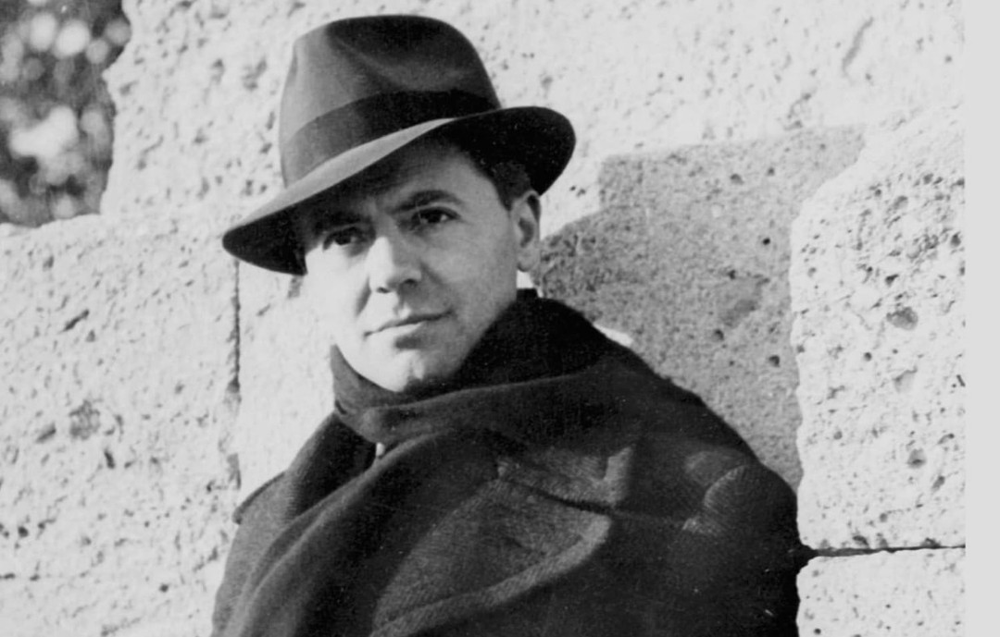

Nom : Jean Pierre Moulin
Dates : 20 juin 1899 – juillet 1943
Nationalité : Française
Jean Moulin est l’une des figures les plus emblématiques de la Résistance française. Préfet républicain, il refuse de céder à l’occupant nazi et devient l’artisan majeur de l’unification des mouvements résistants sous l’autorité de la France libre.
Envoyé par le général de Gaulle en France occupée, Jean Moulin a pour mission de fédérer les différents groupes de résistance. Il fonde le Conseil national de la Résistance (CNR) en 1943, structure essentielle qui coordonne les actions militaires, politiques et sociales contre l’occupant.
Arrêté par la Gestapo en juin 1943, il est torturé par Klaus Barbie. Il meurt sans avoir parlé, devenant un symbole de courage et de sacrifice.
Jean Moulin est considéré comme le héros majeur de la Résistance française. Son action a permis de structurer la lutte contre l’occupant nazi et de préparer la reconstruction politique de la France après la Libération.